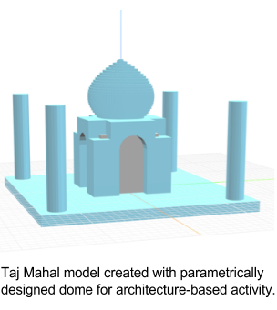
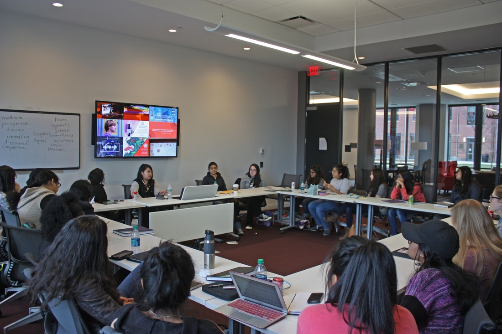

I began Rutgers STEAM from a desire to see more interdisciplinary work, and gained an enduring sense of purpose. STEAM has instilled coherency in my vision as an artist and in my scope as a computer engineer.
While small, Rutgers STEAM has done great things in its short lifespan: one workshop/talk each week for the STEAM x { Tech, Math, Science } Committees and many collaborations. We collaborated with Institute for Electrical & Electronics Engineers (IEEE), University Student Alliance of CompSci (USACS), and App Dev Club (RUMAD) in the Tech Meetup. We worked with the new Innovator in Residence, Julia Buntaine, on a Neuroaesthetics workshop and a Wintersession Course. We then worked with the Center for Computer Science and Math Education (CMCSE) on a new colloquium series (“STEMNet”) that will connect researchers, local elementary school teachers, and students to create STEAM K-12 curricula based on recent technological breakthroughs. Some members even attended rallies to support the NEA during this political season. The future is only brighter, especially with the new president Jenny Chen on board.
Having graduated, as both a founder and a president, I have had time to reflect on STEAM's future, as a movement and organization, both good and bad.
Operational Details of STEAM
Our Rutgers STEAM section is a small one, as is expected at the beginning of a movement. It's been hard to try and encapsulate all that is STEAM all on our own, and admittedly, there was a lot that we were not able to accomplish. While we started off as separate committees, we found it more useful to have committee heads work together as a team, just with different specializations. Man power and time are critical, especially at the beginning of the chapter, in both running events as well as campaigning for them. We found tips and tricks, such as having a "STEAM Emergency Kit," filled with crafting supplies, electronics, etc. to make events and especially outreach possibilities easy to supply for, year to year. It is also critical to build a sense of community and purpose for your Board and members, so we created the Student Spotlight on our facebook page to help grow and share the network of creative individuals. This is also to show and remind oneself of the vast range of STEAM. Several members have come and go, but I want to express immense gratitude for all of them for making STEAM what it is today.
The STEAM Movement
STEAM has seen its biggest push via the Maker culture. The Maker movement has been lauded as a great cross-disciplinary point for the DIY era for both tinkerers and artists alike. However, in education circles, using methods like 3d printing have led many educators, in my experience, to codify “STEAM” as simply an access point for STEM. While STEM continues to have retention problems and produces “money-making” jobs, it's limiting to think of the arts as simply a vehicle for science-learning.
There is still a cultural sense of a “dichotomy” and sometimes even a hierarchy between STEM and the arts/humanities. The STEM fields require one set of skills and insights into society, while the arts evoke another. The beauty of STEAM comes from that intersection and mutual respect. There is still residual, juvenile misrepresentations of STEM as “more difficult” and “more rewarding” for various reasons: money, more mass-producible and tangible output, etc. However, this severely disregards the true range of the arts today, like in design and research residencies generating impactful, well-paying work. Treating STEM as “more important” retains a level of haughtiness that suggests not enough progress is being made.
My hope is that others educate on the individual value of the arts. The arts have battled “funding cuts” in the US school system for years and continue to fight for its value in society. So as much as STEM needs retention and representation, the arts and humanities, too, face similar issues in credibility and representation of many, especially minority voices. Rutgers I feel is on its way with its new Innovator in Residence program.
STEAM As An Organization
STEAM should try to create as balanced and varied a representation of as many fields as it can, but many groups understandably focus largely on Visual Arts, Design, and Music for the “A” component. However, there is a huge power in investigating culture and society in STEAM that I feel is underserved, referring to humanities and social activism. There are already several programs, such as the Eyebeam Residency, that do excellent work in these areas. Failures in science communication are a large reason for discrepancies in general public knowledge (e.g. global warming), and there is little sense of the cultural contexts of scientific innovation, even though they are variables in introducing new knowledge. A Rutgers STEAM member once tried research writing using creative nonfiction methods, to organically story-build the technical and cultural crux of a subject, on a personal thesis project on religious street art and neuroscience.
Topics such as gender and race dynamics and mental health are readily examined in the art world but are foreign in STEAM, despite them being intersectional issues for many in STEM. Art is often political in nature but apolitical in that it isn't required to make tangible changes to policy. However, STEAM has the ability to integrate concepts from environmental and public policy. These I see as providing an ability to create that impact, through activism in the Science March, in NEA-funding rallies, and in more “tech/science for impact” ventures.
I’ve seen many STEAM events that explore one-off activities but don't provide resources for exploring STEAM beyond the organization. I would love sections to produce more opportunities for professional development in STEM, art, and interdisciplinary work. There isn't enough exposure to residencies in many Universities, letting a lot of talent end at graduation with no sense how to build on it outside of hobbies.
Closing Thoughts
STEAM can turn anything from any field into a medium to create and analyze. The sciences and the arts exist in tandem. STEAM has helped finally formalize that in an archaic education system. It is simultaneously broad in scope--covering all STEM fields and all of the arts--and narrow in its current reach. There aren’t many widespread venues that speak equally about the scientific and artistic value or recognize STEAM as a concept. This is why it is vital for these STEAM supporters to promote its mission.
It’s allowed people to connect certain clusters in their brain in ways that they never were able to before. This is the power of STEAM, and why I still feel it is so important to continually push what STEAM has been defined as. There are many fields in the sciences and many fields in the arts and humanities yet to be explored, and thus still many connections yet to be made.
Technology has become a universal status symbol of “modern advancement” for many countries today. As digitization becomes more ubiquitous, computer science becomes more synonymous to “opportunity.” This has been leading to a rise in programs like World Computer Exchange, which allows people to send laptops to third-world countries “to help their potential.” However, with so many programming languages and Operating Systems written for and by English speakers, just how culturally-conscious is technology and how does that play a role in people’s relationship to it? This form of digital colonialism in particular is the topic of interest to programmer and artist Ramsey Nasser, who was the speaker of Rutgers STEAM x Tech Committee’s “Tech x Language” Spring talk on April 7, 2017. STEAM sought to explore the connections between human language and machine language and how each of them affect one another as methods of establishing logic and communicating end-goals. Nasser opened by discussing his background as a computer scientist who had been learning Arabic and English all of his life and wanted to explore his own culture better in graduate school at Parsons and later at an Eyebeam Residency in NYC. He runs the Tumblr Blog “Nope, Not Arabic,” which points out the heinous but frequent misrepresentations of Arabic in media, both physical and digital, including Google Translate. Common mistakes include not understanding its right-to-left format and that symbols must be visually connected for them to have meaning within the language. Moreover, Arabic is a highly graphic language and is not constrained by the spacing, elongation, or even orientation of its characters. This is frequently lost in translated-from-English media. Often, especially in electronic translations, words are allocated only separate, individual boxes for each character byte.
As a computer scientist, he noticed that programming languages today are often written by English native speakers. This isn’t simply in variable names, but down to unchangeable types, such as “int” representing integer.
“Stuff that programmers call ‘human-readable’ code isn’t readable to most of my people. What does that say to us?” commented Nasser.
Thus, he sought to explore the intersection of technology and culture / language by creating his own Arabic programming language, entitled قلب. This is mainly based off of the existing programming language LISP, because of its similar parentheses-based system of characters. During the talk, he showcased the standard simple fibonacci program, written in a right-to-left Integrated Developer Environment (IDE) of his own design. He showed how the IDE could recognize when to connect characters and be indiscriminate to how long the strings would be, as it was still legible Arabic. He also invited members of the club to program in his language and see what they could find and create. As it is an open-sourced project, it has a wide realm of extensibility, including a canvas-style, calligraphic approach to the IDE as opposed to line-by-line.
Many students also spoke about their experiences with technology and culture, such as with Chinese keyboards. Other students pointed out machine learning training sets often did not include data for people with accents and so did not serve them. Some students spoke about their own work on generative language programs and how integrating other cultures could grow them.
However, while Ramsey was able to excite many in his home country and in conferences via demos, he unfortunately found that even down to byte-code, which is based on Latin characters and numbers and the space required for those, many programs could not be written in Arabic unless a complete overhaul of the OS were underway. He commented, a massive cultural change would be needed to make real waves, and given the never-ending source of content for “Nope, Not Arabic,” he does not see it happening soon.
This event prompted many to become more interested in his open-source software, by trying it out themselves. This allowed the group to think of STEAM in the context of culture and the humanities as well. It opened up the dialogue among computer scientists, linguists, and all students alike about diversity and the cultural ramifications of “technological progress.”
Like all fields, architecture and design have experienced revolutionary changes since the advent of computers. Now, giving professionals a wide pool of new tools and methodologies to work with. In many cases, these new practices have allowed the creation of previously impossible designs, essentially widening the palette of motifs available to designers. One such methodology, parametric design, was the topic of Rutgers STEAM’s first workshop of the Fall 2016 semester. Also the first workshop of the year for the STEAM x Math committee. Most commonly used in architecture, this method utilizes the manipulation of a set of design variables to come up with a structure as opposed to drawing out designs on paper or placing individual elements in a drafting program. A key advantage of this method is that it allows the creation of arbitrarily intricate geometric structures that would be too detailed or patterned to be drafted otherwise. To capture the key concepts of parametric design in a workshop format, committee head Celine Park (Rutgers ’19) and treasurer Brian Ronan (Rutgers ’18), with the help of former Rutgers student Taichi Aritomo gave a presentation on the topic, which was followed by a drafting activity that utilized an open-source, node style CAD program called Flood Editor. The node style coding allowed students with little computer science background to learn the basics easily and create their own works after a brief tutorial. This gave an introduction to the syntax of the program as well as some common parameterizations that students could use as inspiration for their designs.
Once familiar with the techniques, the workshop group began working on two short models that each touched upon different aspects of parametric design. The first challenged students to create a building of some kind to explore the use of the methodology in its most common application, architecture. Examples of buildings designed parametrically were provided to give context to how such structures look in real life outside of the drafting program, with some students choosing to recreate famous buildings using the techniques taught. Collaboration between students with different backgrounds was key to this portion of the event. The experienced coders of the group were crucial to troubleshooting problems others were encountering, ensuring that no one hit a wall and gave up before they designed anything substantial.
The second drafting part of the event gave students a chance to investigate the many types of patterns that can be created parametrically, provided with some easily customizable sample code. Students were able to generate geometric designs that were perhaps too complex to incorporate into the simplified building models made previously. The sample code was helpful for the people who were having difficulties with the first activity, as they could contribute creatively without having to code from scratch. By focusing on the types of intricate patterns unique to parametric design, the group was able to experience the level of detail that the method can provide firsthand.
Resulting from the event was a variety of student-created designs, many of which took the premise of the activity in unexpected directions. In addition to this balance, the workshop’s melding of architecture, computer science, mathematics, and design offered an experience in line with the goals of STEAM, making the event an overall success.

In February of the Spring 2017 semester, Rutgers STEAM, in collaboration with the Rutgers Landscape Architecture Club, explored the concept of biophilic design through a terrarium-making workshop. This was the first event for the STEAM x Science Committee in the Spring semester. The Rutgers Landscape Architecture Club spoke about the field and opportunities on campus to explore it more hands-on, and with the help of a Landscape Design professor on campus. Rutgers STEAM was also able to educate the students on the concept of Biophilic Design. Biophilic design focuses on integrating the natural world into our daily lives. Incorporating plant material, natural light, textures, and patterns, biophilic design forges a connection with the natural world rather than give a brief view of nature. Spaces rich with biophilic design immerse people into a new realm and immediately grabs one’s attention. As a result, the mind is distracted from emotional and physical pain, allowing for a state of relaxation to prevail. Studies have found that biophilic design relieves stress, heightens creativity, and improves cognitive function in addition to other benefits. STEAM discussed one study by Roger Ulrich, a world-renowned professor of architecture, in which he observed that hospital patients with views of green/natural space in their rooms experienced better recovery than those without views of natural space. The presence of water elements in a space have similar effects. Examples of biophilic design include the sea organ in Croatia and the mirror cube treehouse hotel in Sweden. These works not only use nature in their design, but they create a connection with the viewer whether it is through sound (as with the sea organ) or a natural living experience (as with the treehouse).
The workshop was a success and will be repeated for future years, for both general members and in community outreach with local shelters. It has even opened up new avenues for both STEAM and the school to explore more green-centric design on both a small-scale and large-scale level, through Landscape Architecture.Culural & Programming Languages.
{ STEAM x Tech Committee } Danica Sapit, Rutgers ‘17, Electrical and Computer Engineering,
Founder and Former President of Rutgers STEAM
danicasapit@gmail.comParametric Design.
{ STEAM x Math Committee } Brian Ronan, Rutgers ’18, Chemical Engineering,
Treasurer, brianronan4@gmail.comBiophillic Design.
{ STEAM x Science Committee } Samvitha Cherravuru, Rutgers Biotechnology ‘17,
Former Secretary and STEAM x Science Committee Head,
s.cherravuru@gmail.com
In Fall 2016, by Rutgers STEAM's suggestion, Julia Buntaine joined Rutgers as an adjunct professor and its first “Innovator in Residence” for the Honors College and the women-in-STEM Douglass College. Julia is a neuroscience-based artist, editor-in-chief of SciArt (Science-Art) Magazine, and director of SciArt Center. Julia lived on campus for a year, advised student projects, gave lectures, and led a neuroaesthetics workshop with Rutgers STEAM during our weekly meeting. Most importantly, she was in charge of designing a new Winter semester course on "STEAM", to which Rutgers STEAM was invited to attend and speak at.
The Winter-session was an 11-Day “crash course” on the realm of “STEAM,” bringing 20 female students through various cross-disciplinary workshops, talks, readings, and events. Its goal was to cultivate a well-rounded intelligence and vocabulary on “interdisciplinary innovation.”
Day 1
It began with an analysis on “The Two Cultures” by CP Snow, as a starter for setting up a language for the course. It was to eradicate any notion of a “dichotomy” and showcasing the looseness of some terms to fall away from their own fields and into each other’s. Students carried art/research journals, to record responses to each class and reading, which would later guide them in creating pieces for their showcase.
Days 2 through 8
Julia took them through a balance of different thriving “innovative work” environments in NYC: studios, labs, and museums. Some highlights included:
-- Students were able to speak with neuroscientist Dr. Paula Croxson, on the mechanics of memory and scientific outreach.
-- They devised novel uses for empty rooftops with esteemed interdisciplinary anthropocene artist and Rutgers faculty Elizabeth Demaray.
-- They visited the gallery of Heather Dewey-Hagborg, a renowned artist who utilized DNA samples, such as gum and hair, to guess at and recreate strangers' likeness in 3d portraits.
-- The class watched “Anatomy Theater” at BRIC Arts Center to study the progress of scientific research and its relationship to societal philosophies, such as religion.
-- Students also performed in a dance piece on neuroscience and spoke to an artist that utilized data on biometrics and hardware to enhance her dancing.
At every step, the students were asked to reflect on how they were reacting to each experience as they explored new, exciting fields and conversations.
Days 9 through 11
The course returned to New Brunswick to reflect with their strengthened community of artists and scientists. They decided to explore the resources at their doorstep, including Mason Gross Art School Studios, Engineering Labs, and, of course, Rutgers STEAM.

Rutgers STEAM members Danica Sapit ('17) and Samvitha Cherravuru ('17) (center) speak during one session.
Read a more in-depth description and analysis at Julia’s web site.
“Not everyone will want to work in STEAM or do creative work, but even just getting to hear, ‘I never thought of art or science this way’ means that this is doing something special,” Buntaine said.
The course had pushed students from different fields to engage in discussions that required that they provide meaning and context from a litany of other sources. They were pushed to create, in journals, in thoughts, and in pieces, even if their major never required them to. It led many to pursue STEAM by engaging in our main organization and to pursue cross-disciplinary excellence even further in their respective domains. Most participants of the class was in agreement of its impact, especially as a starting point for further thinking and newfound appreciation of different kinds of work. It taught this research University to embrace experimentation outside of papers and has paved the way for more programs to come to Rutgers.
On March 25, 2017, Rutgers vocalized their response to the Women’s March by holding its first annual Dr. Jewel Plummer Cobb S.T.E.A.M. Women’s Empowerment Conference “Nevertheless She Persisted.” The conference was named after the distinguished cancer researcher and inspired by the feminist phrase, based on a comment on Elizabeth Warren, on staying empowered even as one is silenced.
Campus Director Karima Woodyard, who led the #stemHERstory movement showcasing the hardships of women in STEM, along with the Vice Chancellor of Student Affairs and other campus partners. They created the conference as a venue for the female-identifying community to “take personal responsibility in owning and embracing their story.” Recognizing that women and other minorities are still marginalized in all fields, Woodyard reached out to Rutgers STEAM to help broaden the scope and call on individuals excelling across the sciences, arts, and everything in between. The frame for the conference was “storytelling” and would act as a showcase of the community’s technical and creative energy.
The conference began with a spoken word poetry piece by student Tiana Ford and with a warm welcome by emcees Danica Sapit, president of Rutgers STEAM and Vice President of Society of Women Engineers (SWE), and Shuting Zhang, president of the National Residence Hall Honorary (NRHH). Every inch of Busch Campus Student Center was adorned in STEAM paraphernalia, including photoshoot spots for #stemHERstory, art, and encouraging handwritten messages across all of the venue’s restroom mirrors.
Next were TED-style lightning talks by six female students and alumni. Some highlights included the first presenter, Christina Ramirez, a PhD candidate in Cellular and Molecular Biology, described the color palette across different parts of her life: the yellow of a pencil that she struck her abusive father with, to no effect. The black void of her helplessness. The orange of her “manipuri chakra” that kept her resilient against gender-based discrimination on her research. Her message was to persevere and never let yourself feel colorless by your own accord. Another speaker, Heba Abdo, was defending her Education thesis that week. She expressed how children’s books guided her in persevering through life, from her family's immigration to her cancer.
Other speakers included: Engineering Governing Council President Christina Parry, NRHH Vice President Chanel Jordan, Rutgers University Student Assembly Vice President Christie Schweighardt, and L’Oreal toxicologist Ashley Green. They spoke about finding their voice and helping others find theirs through hands-on engineering outreach. Also about the obstacles surrounding the “trifecta of their identity” (disposition, gender, and race), academic failure, and personal growth.
The talks were followed by breakout sessions with professionals and faculty on various topics, from “Imposter Syndrome”, “Personal Branding,” to “Motivating Creative Technical Learning through STEAM.” Following was an awards banquet to honor the work of various women at Rutgers, with keynote speaker Dr. Colleen Georges, a distinguished leader in Psychology.
Each of the twenty volunteers were also celebrated as part of the STEAM Ambassadors volunteer program, designed for those interested more in women’s empowerment and interdisciplinary excellence. They were given “I am Malala: How One Girl Stood Up for Education and Changed the World”, by Malala Yousafzai. They were prompted to create a reflection piece, with guidance and support by Graduate Mentors Danielle St. Vincent and Catrice Carter, and were also all given special apparel, padfolios, GRE and MCAT prep books, and journals.
The event ended with an artist reception of science-based art, celebrating STEAM in all of its forms, complete with food, drinks, tears, embraces, and conversation.
“I am so glad that STEAM has entered the realm of political activism and personal connection, as it is such a human-centric part of the experience,” said Sapit. “Community encourages innovation, especially in these interdisciplinary fields. I will be forever touched and thrusted forward by the community here today.”